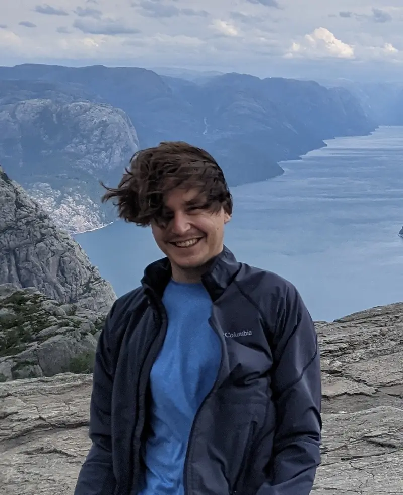

I’m an assistant professor of philosophy at the Munich Center for Mathematical Philosophy (MCMP) at LMU Munich.
My research focuses on epistemology (inquiry as well as formal epistemology) and philosophy of language (indeterminacy, semantics of questions, subject matter, and truthmaker semantics). I’m also interested in the philosophy of artificial intelligence (meaning and understanding in LLMs), and metaphysics (truth and truthmakers).
I obtained a PhD in philosophy from LMU Munich with a dissertation defending a truth conditional account of communication against challenges from semantic indeterminacies, supervised by Hannes Leitgeb and Christian List.
You can email me at conrad.friedrich@lmu.de. Here is my CV.
